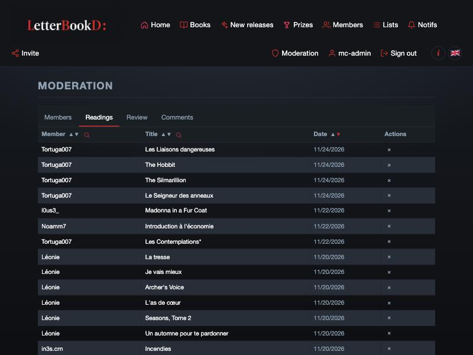

Moderation — ReadsAdmin only
Why it exists: List every reading record (member × book) in the club. Lets you delete a reading record if it is a duplicate, clearly wrong, or abandoned.

Walkthrough
The table has these columns: Member (username), Title (book), Date (when the reading was recorded), and Actions (cross to delete). It uses the same sorting and filtering as the Members tab.
Deleting a reading also removes the review attached to it, but not other members' comments on that review. Those comments become orphaned and must be handled in the Comments tab.
Action chains
Each row describes a trigger in the UI, the modal or form it opens, and the resulting effect.
| Trigger | Modal / Fields | Effect |
|---|---|---|
| Sort / filter icons | — | Same behaviour as on the Members tab. |
| Cross (×) button on a row | Confirmation POST form. | Deletes the reading record AND its attached review. Comments remain, but point to a deleted review. |